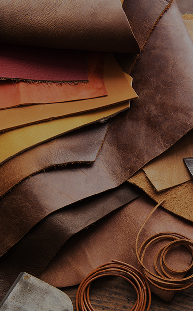

Service
Unsere Dienstleistung im Überblick Wir freuen uns darauf, Sie zu beraten, damit Ihr Produkt rundherum einen professionellen Eindruck macht.

Lederverarbeitung
Unsere Leder entsprechen dem internationalen Standart und werden regelmäßig geprüft.
Entwicklung
Im ersten Schritt entstehen grundlegende Gedanken über die Produktart und alle konkreten Ideen werden zusammengefügt.
Musterfertigung
& Prototyp
Unser erfahrenes Team berät Sie gerne bei der Planung neuer Produkte und der Auswahl von passenden Materialien.
Textildruck
Unser Unternehmen kann Ihnen ein umfangreiches Portfolio bei Textildruck und Textilveredelung anbieten.
Produktion
Sie erleben mit uns den Produktentstehungsprozess von Schnittkonstruktion bis zur finalen Fertigung, sowie Verpackungsherstellung.
Prüfleistung
Wir bieten Ihnen umfangreiche Produktprüfungen, Inspektionen und Beratungen aus eigener Hand.

Über Us
Wir sind ein vollständig selbstfinanzierendes Unternehmen, dass innerhalb weniger Jahre das optimale Produktionsniveau erreicht hat.
Die Gunt Company ist ein Textil Konfektions- & Produktionsunternehmen mit umfangreichen Erfahrung in der Entwicklung, Herstellung und Import von hochwertigen Spezialtextilien und Bekleidung, das 2013 gegründet wurde.
Im Zuge dessen kooperieren wir seit vielen Jahren mit einer großen Anzahl an Stoff- und Zutatenproduzenten, sowie einen der führenden Lederhersteller von Rind- und Büffelvollnarbenleder zusammen, um so alle individuelle Wünsche unserer Kunden in die Tat umzusetzen.